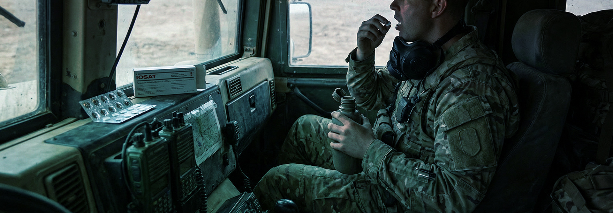

The active ingredient, potassium iodide (KI) is an extremely soluble form of ordinary iodine that the body grabs and stores in the thyroid. This saturates the gland—filling it to capacity—and means that if one is exposed to radioactive iodine (RAI) (the radioactive contaminant that causes thyroid cancer), the body will reject the radioactive form and excrete it.
KI has been tested many times, both in the lab and at the time of Chernobyl. Its safety and effectiveness was documented by the US Nuclear Regulatory Commission (NRC) who noted that children exposed to radiation at Chernobyl were much safer if given KI.

Each tablet of iOSAT contains 130 mg of potassium iodide in a small round tablet. The tablet is scored to aid in splitting it into 65 and 32.5 mg doses for young children (or small pets). In an emergency, adults are encouraged to take one full tablet. Children under 18 can receive an effective dose from half a tablet. However, KI is known to be very safe for children, so any child over the age of one could take a full tablet with no adverse consequences expected. (This makes emergency administration easier.)
IOSAT does not cure thyroid cancer. It prevents it by blocking RAI. Therefore, it is important to take KI as early as possible. If taken right before exposure to RAI, almost complete protection is assured. Potassium iodide works for about 24 hours, so one dose should be taken daily for as long as RAI remains in the environment. In heavily contaminated areas, say within 50 miles of a release from a nuclear powerplant or nuclear weapon, the danger period for the RAI to decay could be as long as 40 to 60 days. While maximum effectiveness is gained by taking KI at or just before initial exposure, significant protection is available even if taken later than this. Beginning KI administration at ANY TIME during the danger period will block entry of RAI for the remaining balance of the danger period.
Side effects from potassium iodide are extremely rare, but it should not be used by anyone with a known allergy to the drug, or those with nodular thyroid disease, hypocomplementemic vasculitis, or dermatitis herpetiformis. The drug is approved for children and pregnant women, but people on other thyroid medicines should alert their physician if they take KI.